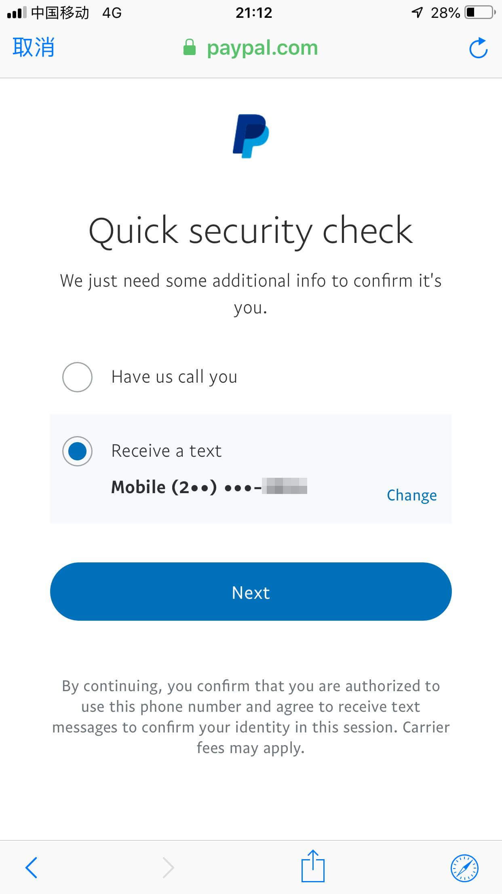

美区 Apple ID 成功绑定使用境内双币卡作为支付方式的美区 PayPal
前言
这是一篇关于使用境内双币卡作为支付方式的美区 PayPal 绑定到美区 Apple ID，并成功在美区 App Store 购买付费 App 的教程，基于我自身的实际操作，结果是成功的（非一次性成功），不保证所有人按照以下步骤都能一次性成功。
准备
- 一部 iOS 设备
- 一台电脑（可选）
- 一张双币卡
- 一个邮箱（建议 Gmail）
- 一个美国地址（参考这篇文章的方法来获取地址，这个地址一定要保存下来，后面统一使用）
- 一个美国电话（建议 Google Voice）
- 一个靠谱的代理（参考此文获取免费的代理)
- 美国 IP 地址（打开美国全局代理模式）
- ipip.net 网站查看你的 IP 地址是否为美国
开始
1. 注册美区 Apple ID
如果你还没有注册美区 Apple ID，可以参考少数派这篇文章先注册一个 Apple ID。注册完成后，再进行下面的步骤。
注意：Apple ID 账单地址请使用上面「准备-4」步骤中生成的美国地址
2. 注册美区 PayPal
因为注册 PayPal 的时候，忘了及时截图，下面部分截图取自网络。
打开美国 Paypal 官网，点击右上角 Sign Up 进入注册账户界面：
选择 Personal Account ，点击 Next：

填写 PayPal 账户相关信息（使用与美区 Apple ID 账户相同的 Gmail 邮箱），并且请确定右下角为美国，然后点击 Next：
接下来输入之前准备好的美国地址和 美国电话（使用与美区 Apple ID 账户相同的美国地址），然后点击 Agree and Create Account：
至此，PayPal 已经注册成功，然后点击最下面按钮 Not Sure? Add card to use later，并添加 VISA 信用卡（我这里绑定的是国内招行 VISA 卡，理论上其他双币卡都可以）：
填写卡的相关信息，并点击 Link Card：
这时 PayPal 提示账户已经全部准备好可进行后续使用，点击下方 Go to your account，进行账户最后验证（验证邮箱和电话，这点很重要，如果没有验证，将100%被风控！）
进入 PayPal 后台首页，请一定要验证你 PayPal 填写的电话和邮箱，不然 100% 风控！！！

验证完成后，再次进入账户页面，确认你的国家为 United States，语言可选择简体中文，SSN 和 Passport 不管。然后点击页面上方的 PAYMENTS ：
在 PAYMENTS 这里可以看到你的付款信息，确认没问题就行，至此关于美区 PayPal 账户注册完全结束。
接下来，我们可以用美区 Paypal 给 Wiki 捐款，看看能否正常消费。进入 Wiki 捐款页面，点击 右上角 - Donate Now ，填写金额 1美元，测试使用 Paypal 是否能成功扣款支付，成功支付说明 PayPal 账户已经ok，接下来开始绑定到自己的美区 Apple ID 上。
3. 美区 Apple ID 绑定美区 PayPal 账户
注意：可能第一次绑定会失败（我第一次绑定就没成功），应该是被 PayPal 风控了，解决风控问题可以参照后面步骤解决
手机打开 App Store，并点击右上角头像：
提示：理论上在 Apple ID 网页版后台也可以进行付款方式绑定
退出现有账户，输入新注册的美区 Apple ID 账户及密码，并点击 Sign In 登录：
登陆成功后，点击头像：
进入 Account Setting 界面，点击 Payment Information，进入付款方式设置页面：
选择 PayPal，并点击 Log In to PayPal：
接下来会让你验证 PayPal，输入账号密码：
点击 Log In，会进入 PayPal 安全检查页面，绑定美区 PayPal 账户会进行安全检查，并对一些有风险的账户进行风险控制：
一般来说如果没问题的话，就会直接显示你 PayPal 绑定的信用卡信息，你点击 确认 即可完成你的美区 PayPal 账户绑定。
如果没有出现信用卡信息，可能会让你验证 Google Voice 号（网络上的一些帖子反馈说会遇到此情况）直接验证，验证时选择发送短信即可，一般短信验证通过没问题，就可以绑定成功了。短信验证图如下所示：

解决 PayPal 被风控
如果你按照上面的步骤，一次性就绑定成功，恭喜你。但是，我第一次就被风控导致绑定失败了，提示如下：
Sorry, we weren ’ t able to set up preapproved payments at this time.
出现这种情况的话，直接在 Paypal 网站上联系在线客服，点击 该链接 进入 PayPal Message Center，点击 New Message 按钮：
等待在线客服接入，反馈你遇到的问题，发送的内容参考如下：
Hi, there. I just signed up my PayPal account. when I bind it with iTunes. it shows “Sorry, we weren ’ t able to set up preapproved payments at this time.”
Can you help me to figure out, thanks!
客服会和你确认一下基本信息，查看并告知风控的可能原因，确认 OK 以后，他会让你再尝试一次。
和 PayPal 客服沟通完成后，我是直接登录 Apple ID 的网页端操作绑定 PayPal，没有在手机端操作。打开 appleid.apple.com ，输入账号密码后，进入美区 Apple ID 账户信息首页：
往下拉，找到 Payment and Shipping - PAYMENT METHOD，选择 PayPal 付款方式，并点击 Sign In to PayPal，（ BILLING ADDRESS 需要和 PayPal 地址一致，此外，如果 SHIPPING ADDRESS 为空，请把 BILLING ADDRESS 地址复制到并填写，可选部分可不填）：
此时会弹出一个窗口，再次登录你的 PayPal 账户，直接进行安全检查。安全检查结束后，哈哈，成功显示付款信息页面。（如果在这里还是被风控了，那么说明与在线客服聊天并解除风控的办法已失效，我暂时没有其他办法了）
最后点击 Save（如在手机端操作，App Store 里是点击 Done）成功完成绑定，完美解决了美区 PayPal 的风控：
至此所有 PayPal 的注册、绑定以及风控的解决办法（不保证之后的所有人100%可以解除风控）都已经结束。但是这并不意味着所有的问题都已解决，接下来还要过 Apple 这一关，也就是 Apple 的风控。
4. 测试美区 App Store 购买
在美区 App Store 中测试 App Purchase（应用购买） 以及 In-App Purchases（应用内购买） 这两种付款方式，查看是否都能成功付款，如果购买失败，说明被 Apple 风控，请查看后续的解决办法。
打开 App Store，登陆已经成功绑定美区 PayPal 的美区 Apple ID 账户，并随便搜索一个付费的 App（找个便宜的测试就行），并进行 AP（App Purchase应用购买） 购买测试。
点击下载 App，会弹出指纹确认，指纹确认后，会显示 PayPal 号码的验证（验证也可能不会出现），示意图如下：
如果不出现验证，基本就直接购买成功了，如果出现了验证，输入验证码即可：
点击 Done，会再跳出一次指纹支付，支付完成后，会收到 PayPal 和 iTunes 的收据，表示 App Purchase 成功通过测试。
在这之后随意打开一个可以进行 IAP（In-App Purchases 应用内购买）付款的App，例如 Speedtest App，进入 Speedtest 设置 页面：

点击 移除广告，使用指纹验证，如果成功，会出现如下提示：
如上图显示 You're all set。则说明你成功进行了 IAP(应用内购买) 的付款，没有被 Apple 风控，至此所有的美区 Apple ID 账户都已完全可以正常使用。
如果显示 Your Purchase Could Not Be Completed 则说明你被苹果风控了（我没有遇到这个提示，以下描述来源于部分网络文章，有效性未知）：
出现这个提示，只有一个办法可以解决，就是致电中国苹果客服（中国客服即可，因为是全球服务，不一定需要美国客服）。但是要注意，这个情况是隶属于账单部门，如果选错部门也没关系，可以进行转接。
致电苹果客服后，大致的聊天内容基本就是你的美区 Apple ID 成功绑定 PayPal 后，可以进行 AP 的消费，却不能进行 IAP 的消费，把提示不能进行 IAP 消费的那段的问题反馈给客服：无法完成此次付款，请联系 iTunes 客服寻求技术支持。
然后大概会再经历 1-2 次转接，之后转接的人会和你说他们将你的账户进行了调整，让你再一次尝试 IAP 的付款。基本到这里就成功消费了
在解除了 Apple 的风控之后，可以不再使用代理，即可在美区 App Store 上消费。
5. 如果最终还是没成功
PayPal 的风控非常「奇妙」，如果你还是无法躲过它的风控，按照上面的方法都没有成功，建议用新邮箱重新注册再试一试了。注意全局使用美区代理，不要更换IP地址，手机和电脑尽量使用同一代理。
当然你也可以直接在美国官网购买美区的电子礼品卡送给自己，充值金额可以是 10-200 美元不等，可以使用国内信用卡购买。
6. PayPal 汇率问题
Visa 用户无需进行此操作。 Mastercard 和 AE 绑卡用户请注意，PayPal 会在结算中使用自家更差的汇率，增加汇率损失。因为我用的是 Visa，无法演示。这里参考网上帖子进行如下设置：